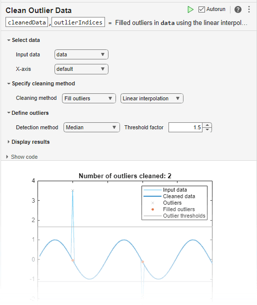

filloutliers
Detect and replace outliers in data
Syntax
Description
B = filloutliers(A,fillmethod)A and replaces them according to
fillmethod. For example,
filloutliers(A,"previous") replaces outliers with the
previous nonoutlier element.
If
Ais a matrix, thenfilloutliersoperates on each column ofAseparately.If
Ais a multidimensional array, thenfilloutliersoperates along the first dimension ofAwhose size does not equal 1.If
Ais a table or timetable, thenfilloutliersoperates on each variable ofAseparately.
By default, an outlier is a value that is more than three scaled median absolute deviations (MAD) from the median.
You can use filloutliers functionality interactively by adding
the Clean Outlier
Data task to a live script.
B = filloutliers(A,fillmethod,findmethod)filloutliers(A,"previous","mean") defines an outlier as an
element of A more than three standard deviations from the
mean.
B = filloutliers(A,fillmethod,"percentiles",threshold)threshold. The threshold argument is a
two-element row vector containing the lower and upper percentile thresholds, such as
[10 90].
B = filloutliers(A,fillmethod,movmethod,window)window. For example,
filloutliers(A,"previous","movmean",5) identifies outliers as
elements more than three local standard deviations from the local mean within a
five-element window.
B = filloutliers(___,Name,Value)filloutliers(A,"previous","SamplePoints",t) detects outliers
in A relative to the corresponding elements of a time vector
t.
Examples
Fill outliers in a vector of data using the "linear" method, and visualize the filled data.
Create a vector of data containing two outliers.
A = [57 59 60 100 59 58 57 58 300 61 62 60 62 58 57];
Replace the outliers using linear interpolation.
B = filloutliers(A,"linear");Plot the original data and the data with the outliers filled.
plot(A) hold on plot(B,"o-") legend("Original Data","Filled Data")

Identify potential outliers in a table of data, fill any outliers using the "nearest" fill method, and visualize the cleaned data.
Create a timetable of data, and visualize the data to detect potential outliers.
T = hours(1:15); V = [57 59 60 100 59 58 57 58 300 61 62 60 62 58 57]; A = timetable(T',V'); plot(A.Time,A.Var1)
Fill outliers in the data, where an outlier is defined as a point more than three standard deviations from the mean. Replace the outlier with the nearest element that is not an outlier.
B = filloutliers(A,"nearest","mean")
B=15×1 timetable
Time Var1
_____ ____
1 hr 57
2 hr 59
3 hr 60
4 hr 100
5 hr 59
6 hr 58
7 hr 57
8 hr 58
9 hr 61
10 hr 61
11 hr 62
12 hr 60
13 hr 62
14 hr 58
15 hr 57
In the same graph, plot the original data and the data with the outlier filled.
hold on plot(B.Time,B.Var1,"o-") legend("Original Data","Filled Data")

Use a moving median to detect and fill local outliers within a sine wave that corresponds to a time vector.
Create a vector of data containing a local outlier.
x = -2*pi:0.1:2*pi; A = sin(x); A(47) = 0;
Create a time vector that corresponds to the data in A.
t = datetime(2017,1,1,0,0,0) + hours(0:length(x)-1);
Define outliers as points more than three local scaled MAD from the local median within a sliding window. Find the location of the outlier in A relative to the points in t with a window size of 5 hours. Fill the outlier with the computed threshold value using the method "clip".
[B,TF,L,U,C] = filloutliers(A,"clip","movmedian",hours(5),"SamplePoints",t);
Plot the original data and the data with the outlier filled.
plot(t,A) hold on plot(t,B,"o-") legend("Original Data","Filled Data")

Create a matrix of data containing outliers along the diagonal.
A = randn(5,5) + diag(1000*ones(1,5))
A = 5×5
103 ×
1.0005 -0.0013 -0.0013 -0.0002 0.0007
0.0018 0.9996 0.0030 -0.0001 -0.0012
-0.0023 0.0003 1.0007 0.0015 0.0007
0.0009 0.0036 -0.0001 1.0014 0.0016
0.0003 0.0028 0.0007 0.0014 1.0005
Fill outliers with zeros based on the data in each row, and display the new values.
[B,TF] = filloutliers(A,0,2); B
B = 5×5
0 -1.3077 -1.3499 -0.2050 0.6715
1.8339 0 3.0349 -0.1241 -1.2075
-2.2588 0.3426 0 1.4897 0.7172
0.8622 3.5784 -0.0631 0 1.6302
0.3188 2.7694 0.7147 1.4172 0
You can access the detected outlier values and their filled values using TF as an index vector.
[A(TF) B(TF)]
ans = 5×2
103 ×
1.0005 0
0.9996 0
1.0007 0
1.0014 0
1.0005 0
Create a vector containing two outliers and detect their locations.
A = [57 59 60 100 59 58 57 58 300 61 62 60 62 58 57]; detect = isoutlier(A)
detect = 1×15 logical array
0 0 0 1 0 0 0 0 1 0 0 0 0 0 0
Fill the outliers using the "nearest" method. Instead of using a detection method, provide the outlier locations detected by isoutlier.
B = filloutliers(A,"nearest","OutlierLocations",detect)
B = 1×15
57 59 60 59 59 58 57 58 61 61 62 60 62 58 57
Replace the outlier in a vector of data using the "clip" fill method.
Create a vector of data with an outlier.
A = [60 59 49 49 58 100 61 57 48 58];
Detect outliers with the default method "median", and replace the outlier with the upper threshold value by using the "clip" fill method.
[B,TF,L,U,C] = filloutliers(A,"clip");Plot the original data, the data with the outlier filled, and the thresholds and center value determined by the outlier detection method. The center value is the median of the data, and the upper and lower thresholds are three scaled MAD above and below the median.
plot(A) hold on plot(B,"o-") yline([L U C],":",["Lower Threshold","Upper Threshold","Center Value"]) legend("Original Data","Filled Data")

Since R2024a
Create a table and fill outliers defined as values greater than 10. Create a table of logical variables loc that indicates the locations of outliers to fill. Then, specify the known outlier locations for filloutliers using the OutlierLocations name-value argument.
A = [1; 4; 9; 12; 3]; B = [9; 0; 6; 2; 1]; C = [14; 4; 2; 3; 8]; T = table(A,B,C)
T=5×3 table
A B C
__ _ __
1 9 14
4 0 4
9 6 2
12 2 3
3 1 8
loc = T>10
loc=5×3 table
A B C
_____ _____ _____
false false true
false false false
false false false
true false false
false false false
T = filloutliers(T,10,OutlierLocations=loc)
T=5×3 table
A B C
__ _ __
1 9 10
4 0 4
9 6 2
10 2 3
3 1 8
Input Arguments
Name-Value Arguments
Output Arguments
More About
Alternative Functionality
Live Editor Task
You can use filloutliers functionality interactively by adding
the Clean Outlier
Data task to a live script.

References
[1] NIST/SEMATECH e-Handbook of Statistical Methods, https://www.itl.nist.gov/div898/handbook/, 2013.
Extended Capabilities
Version History
Introduced in R2017aSee Also
Functions
rmoutliers|isoutlier|clip|ismissing|fillmissing|fillmissing2